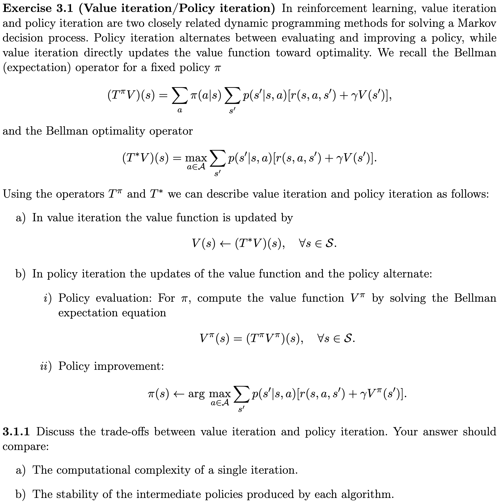

Prof. Dr. Sebastian Peitz
Scientific Machine Learning group, Paderborn University
No additional material allowed!
Questions regarding the programming tasks:

The following are rather generic, but you can expect questions related to your submissions along these lines: